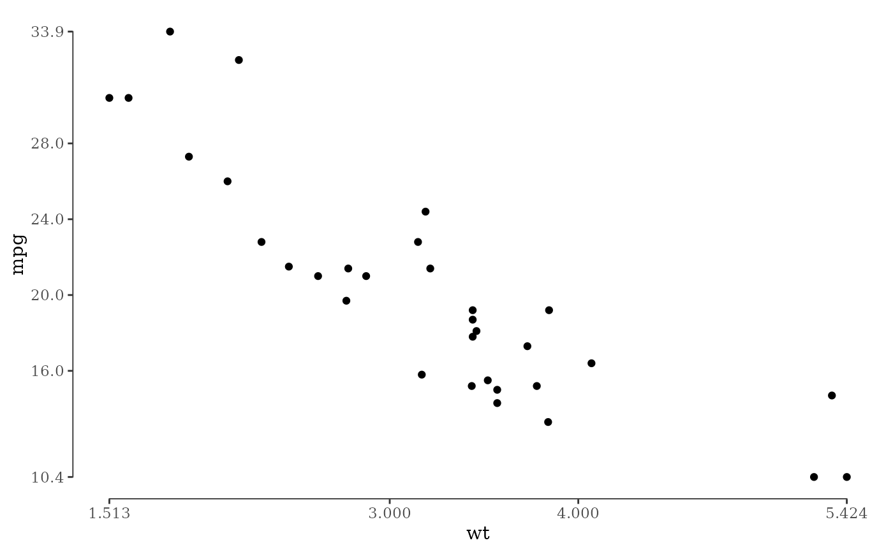

This function returns pretty axis breaks that always include the extreme values of the data. This works by calling the extended Wilkinson algorithm (Talbot et al., 2010), constrained to solutions interior to the data range. Then, the minimum and maximum labels are moved to the minimum and maximum of the data range.
Value
A function which takes a single argument, a vector of data, and returns the vector of axis label locations.
Details
extended_range_breaks() follows the conventions of the scales package: it
returns a function that takes a vector of data and returns the breaks.
Note that ggplot2 hands a breaks function the expanded scale limits, not the data
range. Passing extended_range_breaks() directly to breaks therefore places the
end labels at the panel edges rather than at the extremes of the data. To label the extremes,
which is what pairs with geom_rangeframe(), apply the function to the data
instead: scale_x_continuous(breaks = extended_range_breaks()(mtcars$wt)).
References
Talbot, J., Lin, S., Hanrahan, P. (2010) An Extension of Wilkinson's Algorithm for Positioning Tick Labels on Axes, InfoVis 2010.
See also
Other tufte:
geom_rangeframe(),
geom_tufteboxplot(),
theme_tufte()
Author
Justin Talbot jtalbot@stanford.edu, Jeffrey B. Arnold, Baptiste Auguie
Examples
# Pretty breaks that always include the extremes of the data
extended_range_breaks()(mtcars$wt)
#> [1] 1.513 3.000 4.000 5.424
library(ggplot2)
ggplot(mtcars, aes(x = wt, y = mpg)) +
geom_point() +
geom_rangeframe() +
scale_x_continuous(breaks = extended_range_breaks()(mtcars$wt)) +
scale_y_continuous(breaks = extended_range_breaks()(mtcars$mpg)) +
theme_tufte()
